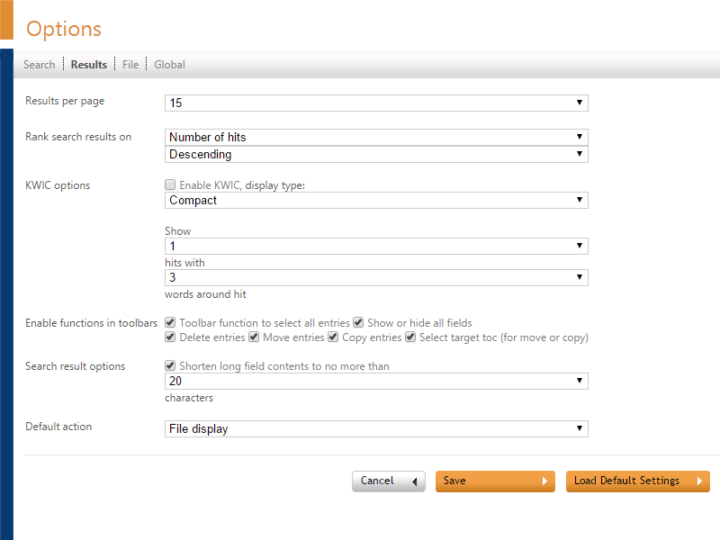

The Results Options page defines how results are displayed.

Results per page
Select the maximum number of files you want to display in the View Page.
Rank Search results on
Define the way files are ranked. You can choose between Number of hits, Hitdensity, File size, File date, Comment, File Name and File path.
Choose between Ascending and Descending.
KWIC options
The options are:
- Enable KWIC
- Display type: Compact or Separated. Compact displays all contexts one after the other, Separated displays all contexts on a separate line
- Show n hits with n words around hit: Defines the maximum number of hits shown per result, and the number of words (maximum 50) around the hit.
Enable functions in toolbars
- Toolbar function to select all entries
- Show or hide all fields
- Delete entries
- Move entries
- Copy entries
- Select target toc (for move or copy)
Search result options
'Shorten long field contents to no more than n characters' displays only the first part of a field's contents to decrease the width of the search results screen.
Default action
- File display
- Launch file in original application
- View as PDF
- View as multi-page TIFF